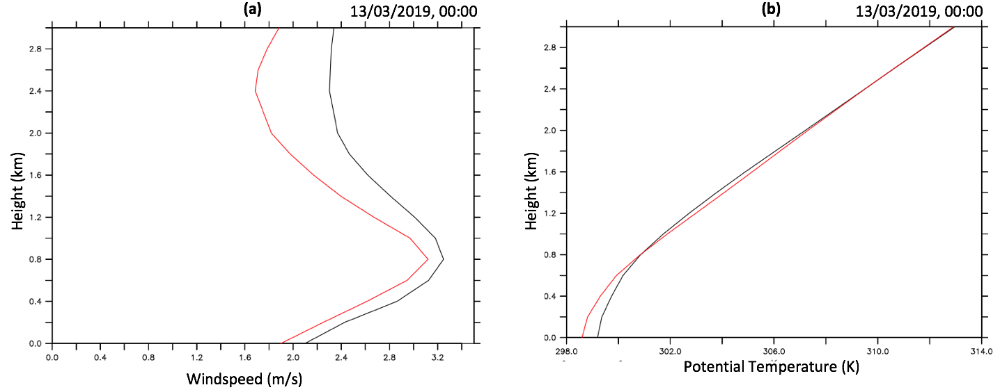
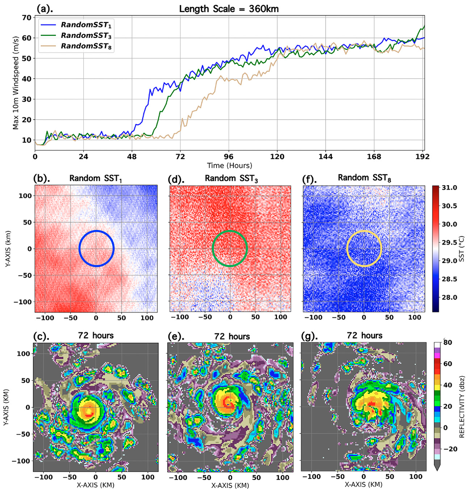

The Role of Turbulence in Modulating Mean Wind Fields

Improved representation of turbulent processes in numerical models of tropical cyclones (TCs) is expected to improve intensity forecasts. To this end, the authors use a large-eddy simulation (with 31-m horizontal grid spacing) of an idealized category 5 TC to understand the role of turbulent processes in the inner core of TCs and their role on the mean intensity. Azimuthally and temporally averaged budgets of the momentum fields show that TC turbulence acts to weaken the maximum tangential velocity, diminish the strength of radial inflow into the eye, and suppress the magnitude of the mean eyewall updraft. Turbulent flux divergences in both the vertical and radial directions are shown to influence the TC mean wind field, with the vertical being dominant in most of the inflowing boundary layer and the eyewall (analogous to traditional atmospheric boundary layer flows), while the radial becomes important only in the eyewall. The validity of the downgradient eddy viscosity hypothesis is largely confirmed for mean velocity fields, except in narrow regions which generally correspond to weak gradients of the mean fields, as well as a narrow region in the eye. This study also provides guidance for values of effective eddy viscosities and vertical mixing length in the most turbulent regions of intense TCs, which have rarely been measured observationally. A generalized formulation of effective eddy viscosity (including the Reynolds normal stresses) is presented.
This work is currently
published in the Journal of the Atmospheric Sciences.
I am interested in numerical modelling of differential equations that describe the behaviour of geophysical fluids.
This involves discretizing coupled sets of ordinary and partical differential equations mostly using finite difference
approach (written in Fortran90)
I am also skilled in manipulating and visualizing climate data in formats like Netcdf and grib. Most of this is done with CDO, NCO and Python but
I also use ferret,NCL and Python for visualization.
Impact of realistic multiscale SST anomalies on predictability

The characteristics of sea surface temperature (SST) anomalies in the tropical
cyclone near-environment are inherently multiscale in nature as a result of interactions between various dynamical
processes in the ocean. Assuming a uniform SST beneath storms in numerical simulations limits the predictability of
how air–sea interaction affects the physics of rapid intensification (RI).
In this study, the influence of realistic multiscale
SST anomalies on RI onset timing is investigated. Our results suggest that the length scale of SST anomalies (in addition
to its magnitude) modulate the distribution of convection, creating asymmetries around the RMW that can influence
the predictability of RI onset. This effect is further modulated by storm translation speed, with the most
prominent impact seen in slow-moving storms.
This work is currently
published in the Journal of the Atmospheric Sciences.